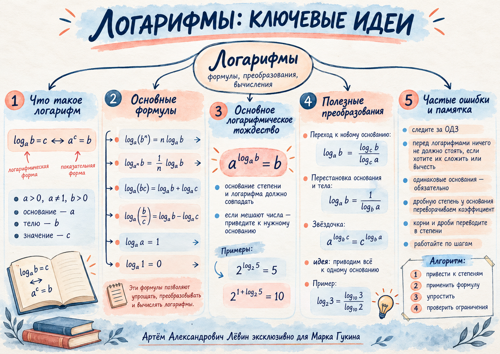

Логарифмы и преобразования
Степени и логарифмы работают вместе. Разберём правила, научимся приводить выражения к удобному основанию и последовательно сворачивать сложные вычисления.
01 / Фундамент
Что означает логарифм
Логарифм отвечает на вопрос: в какую степень нужно возвести основание, чтобы получить нужное число?
В записи loga b = x число a — основание, b — положительный аргумент («тело»), x — значение логарифма.
Полезно помнить: loga a = 1 и loga 1 = 0.
02 / Правило показателей
Где стоит степень?
Показатель аргумента выходит напрямую, показатель основания — обратным множителем.
Степень у аргумента: показатель переносится без изменения.
Степень у основания: показатель появляется в знаменателе, m ≠ 0.
03 / Алгебра логарифмов
Сумма, разность, множитель
Сначала добейтесь одинаковых оснований. Затем перенесите коэффициенты в показатели аргументов.
Если логарифмов несколько, сворачивайте их последовательно; для всех аргументов сохраняйте условие положительности.
04 / Центральная идея
Основное логарифмическое тождество
Основание внешней степени и основание логарифма внутри её показателя должны совпасть.
Например, 5 = log10(105) = log2(25), а e = πlogπ e.
05 / Выбираем основание
Переход к новому основанию
Основание можно заменить удобным для вычисления. При этом возникает отношение двух логарифмов.
Здесь a, c > 0, a, c ≠ 1, b > 0. В частности, log2 3 = (log10 3)/(log10 2).
06 / Повышенный уровень
Тождество с перестановкой
Полезная связь степеней и логарифмов. Её можно вывести из уже известных свойств.
07 / Разбор по шагам
Составное выражение
В числителе и знаменателе используем одну основу и сокращаем общий ненулевой множитель.
Пошаговый разбор
Перейдите по этапам решения. Все преобразования взяты из пособия.
Исходное выражение.
Алгоритм для подобных вычислений
- Убедитесь, что каждый логарифм определён.
- Представьте составные числа, корни и дроби как степени.
- Вынесите показатели; при выносе из основания возьмите обратный множитель.
- Приведите логарифмы к общей основе и упростите выражение.
- Сократите только ненулевые общие множители.
08 / Самостоятельная практика
Путь А · 10 заданий
Задания в порядке нарастающей сложности. Отмечайте выполненные упражнения, ответы раскрывайте после собственного решения.
- Вычислите: log5 125.
Проверить ответ
3
- Вычислите: log2(1/∛16).
Проверить ответ
−4/3
- Вычислите: log1/√3 27.
Проверить ответ
−6
- Вычислите: log1/9(1/⁵√81).
Проверить ответ
2/5
- Вычислите: log7 14 + log7(1/2).
Проверить ответ
1
- Вычислите: 2 log3 5 + log3 9 − log3 25.
Проверить ответ
2
- Вычислите: 2log8 125.
Проверить ответ
5
- Вычислите: 32 + log3 4.
Проверить ответ
36
- При a, b > 0, a ≠ 1, b ≠ 1 известно, что logb a = −4. Найдите loga(b6√a).
Проверить ответ
−1
- Вычислите: log9 128log27 256.
Проверить ответ
21/16
09 / Архив занятия
Материалы для повторения
Полный чек-лист, редактируемый исходник и визуальная памятка по логарифмам.

